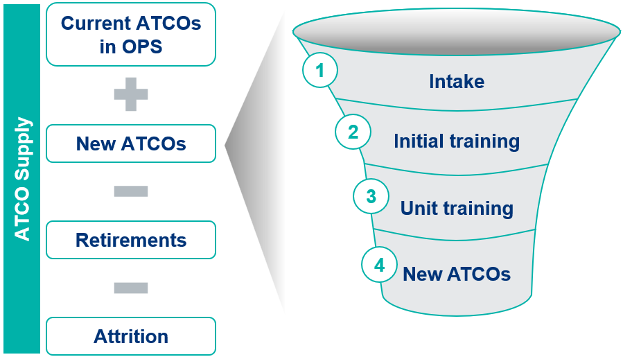
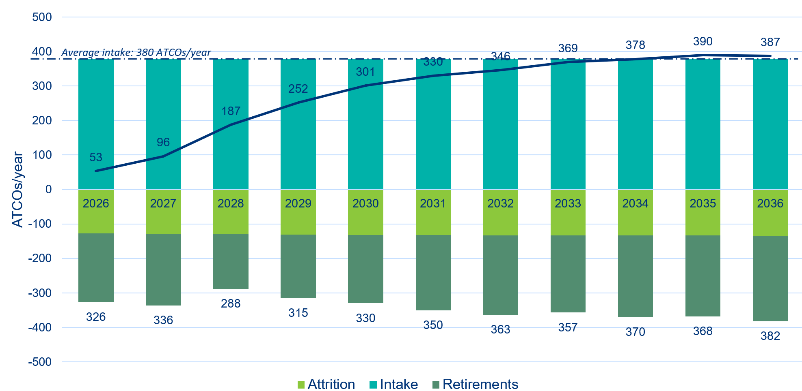

How workforce supply evolves
The model updates the operational workforce annually as newly qualified controllers enter and others leave. Training lead times and capacity determine when recruitment becomes operational supply.
Workforce inflows and outflows
The supply component of the model represents the number of ATCOs expected to be available over the projection period, which evolves through the interaction of workforce inflows and outflows that affect the ATCO population over time.
The future availability of qualified controllers depends not only on the number of controllers currently in operations but also on the capacity of the training process to generate new controllers and on the rate at which existing controllers leave operational duties. As a result, the model represents supply as a dynamic workforce stock that is updated annually throughout the projection period.

Supply starts from the operational workforce in the baseline year. Newly qualified controllers are added, and controllers leaving operational duties are removed each year.
The principal inflow is the output of the training process. Controllers entering operations in a given year are the result of recruitment decisions taken several years earlier and are therefore subject to both a time delay and an attrition process throughout training. The number of new controllers reaching operations depends on four principal factors: the annual intake of trainees, the duration of the training process, the proportion of trainees successfully completing training, and the overall capacity of the training system. Together, these variables (intake, training duration, success rate & training capacity) determine both the volume and timing of future entries into the operational workforce.
The model also recognises that training throughput is constrained by available resources. Increasing recruitment does not automatically result in a proportional increase in ATCOs if bottlenecks exist elsewhere in the training process. Instructor availability, simulator capacity, OTJ training opportunities and other training resources influence the number of trainees that can progress through the system and ultimately obtain operational endorsements. Training capacity therefore acts as a limiting factor on the production of future controllers.
On the outflow side, the model distinguishes between retirements and other forms of workforce attrition. Retirements are determined by the age structure of the workforce and the retirement provisions applicable to each ANSP. Attrition captures all other departures from operational duties, including resignations, transfers to non-operational functions, medical disqualifications and other forms of permanent withdrawal from operational service. Together, these mechanisms determine the rate at which existing controller capacity exits the system.
The supply projection is compared with projected workforce demand to calculate the annual ATCO gap.
Assumptions
The supply calculation relies on a number of assumptions relating to the current workforce baseline, the future output of the training system and the rate at which controllers leave operational duties. These assumptions determine how workforce inflows and outflows evolve throughout the projection period and, consequently, the future availability of operational ATCOs.
- Starting workforce: The supply projection is anchored on the operational ATCO workforce available at the beginning of the projection period. Where multiple sources of information were available, priority was given to the most recent and reliable workforce data available at the time of the analysis. Publicly available information was supplemented, where necessary, by data obtained directly from ANSPs through surveys, interviews and official planning documents.
- Training output: The model assumes that training systems continue to operate broadly in line with the characteristics reported by ANSPs at the time of the study. Future training output is therefore determined by the interaction of recruitment intake, training duration, training success rates and training capacity. Unless specific changes had already been formally approved or implemented, no major structural changes to training arrangements were assumed within the baseline projections.
- Retirements and attrition: Retirement projections are based on the workforce age profile and the retirement arrangements applicable to each ANSP. In addition, the model incorporates workforce attrition arising from resignations, transfers to non-operational duties and loss of medical certification. Given the limited availability of harmonised European information on these departures, a common attrition approach is applied across the study area to ensure consistency in the representation of workforce losses.
Projected workforce flows
Whilst demand determines how many controllers are required by the system, supply determines how many controllers are available to provide air traffic services. Understanding the evolution of supply is therefore essential to explain why workforce shortages emerge and persist over time.
Unlike demand, which is primarily driven by traffic growth and operational performance, supply evolves through the interaction of workforce inflows and outflows. New controllers enter the operational workforce through the training process, whilst retirements and attrition reduce the number of controllers available for operational duties. The balance between these flows determines the long-term evolution of workforce availability.

Each year, new controllers enter operations (gross intake, shown above zero), while others leave through attrition and retirement (the outflow, shown below zero). The difference is the net addition to the workforce, and the dark blue line accumulates that net addition year after year to show how the operational workforce builds over the period.
On the outflow side, attrition remains relatively stable throughout the projection, removing approximately 130 controllers annually. Retirements, however, are the dominant component and increase progressively as the current workforce ages. As a result, the total outflow grows over time, rising from around 326 controllers per year at the start of the period to roughly 382 by the end. Against these outflows, the model assumes a constant annual intake of approximately 380 newly qualified controllers. This assumption is consistent with the historical recruitment rate.
The accumulated line reveals a clear trend. In the early years, intake exceeds outflow, so the workforce grows quickly and the accumulated total climbs steeply. As retirements build up, however, each year adds less than the one before: the annual net addition shrinks, the accumulated line flattens, and by the end of the horizon it barely moves at all, around 390 controllers by 2035 and essentially flat thereafter, as the final year's intake and outflow almost cancel out. The precise timing of this stabilisation remains subject to uncertainty, particularly regarding future retirement patterns and workforce attrition.
This finding highlights a structural characteristic of the European ATCO workforce. Maintaining current recruitment levels does not imply sustained workforce growth. Because a growing retirement wave absorbs an increasing share of a fixed intake, the workforce eventually stops expanding, even though the same number of controllers is trained every year. Preserving a growth trajectory would therefore require recruitment and training outputs to increase over time rather than remain constant.